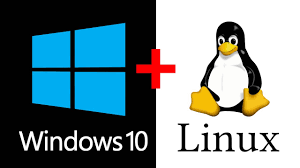

Dualboot
En este proyecto hice un dualboot, osea, en una misma maquina tener dos SOS diferentes, en mi caso eran Windows y Ubuntu.
En el boton de abajo puedes ver el PDF con la explicacion de como hacerlo.
Tecnologias usadas:
